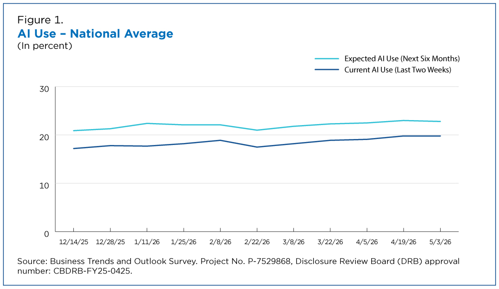
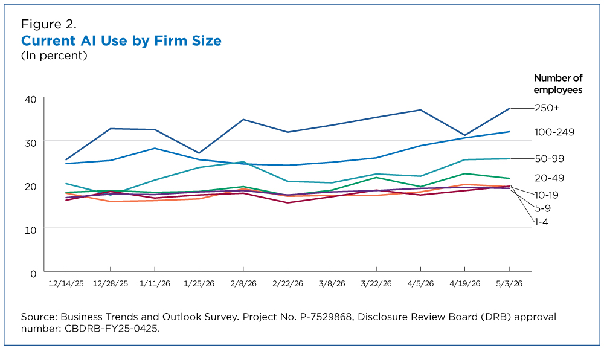
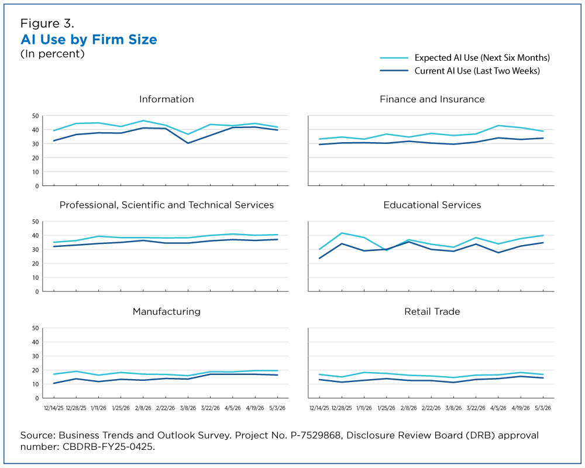

Use of artificial intelligence (AI) by U.S. businesses has grown since December but varied by firm size and sector, according to the U.S. Census Bureau’s Business Trends and Outlook Survey (BTOS). The survey provides a biweekly, nationally representative view of AI implementation across the business landscape. We reviewed the most recent six months of BTOS data collected from December 14, 2025 to May 3, 2026 to analyze trends in AI business usage.
The BTOS data (December 2025 to May 2026) show that overall AI usage hovered between 17% and 20% — and that between 20% and 23% of businesses expected to be using it in the next six months.
The BTOS captures two facets of AI adoption, asking the following questions (among others): Whether the business used AI in the past two weeks. Whether the business expects to use AI in the next six months. Originally framed around AI use “in producing goods or services,” rather than to carry out simple tasks like drafting emails, the Census Bureau revised the wording last November to ask businesses whether they were using AI “in any business function.”
The BTOS data (December 2025 to May 2026) show that overall AI usage hovered between 17% and 20% — and that between 20% and 23% of businesses expected to be using it in the next six months (Figure 1).

AI use by firm size shows similar trends (Figure 2). For example, 37% of firms with at least 250 employees reported using AI in their business operations. In the data collection period ending May 3, 2026, 32% of firms with 100 to 249 employees said they used AI.

Between December 2025 and May 2026, AI use increased among firms with at least 20 employees but didn’t change significantly among firms with fewer than 20 employees. Less than 20% of firms with four or fewer employees reported using AI.
AI use remained relatively steady in many sectors over the last six months (Figure 3). The rate of expected use within these sectors also did not undergo any statistically significant changes: As of May 3, 2026, the AI use rates in the Information (39.7%) and Finance and Insurance (33.9%) sectors were both higher than the national rate (19.8%) but neither reported significant shifts since December. The expected usage rates in both sectors tells a similar story. About 42% of businesses in the Information sector and roughly 39% in Finance and Insurance expected to use AI in their business functions over the next six months, higher than the national average but not significantly different from the expected usage rate reported six months earlier. In comparison, businesses in the Retail Trade sector reported current and expected usage lower than the national average: around 14% of businesses currently use AI, and about 17% expect to in the next six months.

The BTOS continues to evolve as new tools like AI emerge. On November 17, 2025, BTOS began collecting data for its second AI supplement and revised the core AI use questions. This updated supplement expands on the original content by measuring AI use across 15 different business functions, including finance, human resources, customer service, marketing, information technology and research and development. In addition, the supplement asks about AI-related operational changes, such as training, workflow adjustments and new technology investments. The supplemental data also ask why a business is not using AI. Data for this experimental product can be found on this page and in this recently published working paper.